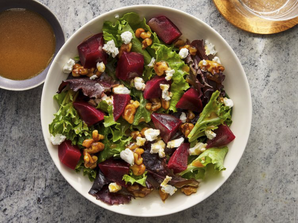

Beet Salad

Description
This delicious beet salad with creamy goat cheese, maple-candied walnuts,
and a tangy orange and balsamic vinaigrette is a beautiful way to serve
beets.
Ingedients
- 4 medium beets - scrubbed, trimmed, and cut in half
- 1/3 cup chopped walnuts
- 3 tablespoons maple syrup
- 1 (10 ounce) package mixed baby salad greens
- 1/2 cup frozen orange juice concentrate
- 1/4 cup balsamic vinegar
- 1/2 cup extra-virgin olive oil
- 2 ounces goat cheese
Steps
- Place beets into a saucepan; add enough water to cover. Bring to a boil,
then cook for 20 to 30 minutes, until tender. Drain and cool, then cut
into cubes.
- While beets are cooking, place walnuts in a skillet over medium-low
heat. Heat until warm and starting to toast. Stir in maple syrup; cook and
stir until evenly coated, then remove from heat and set aside to cool
- To make the dressing: Whisk orange juice concentrate, balsamic vinegar,
and olive oil together in a small bowl.
- Place a large helping of baby greens onto each of four salad plates,
divide candied walnuts equally and sprinkle over greens. Place equal
amounts of beets over greens and top with pieces of goat cheese. Drizzle
dressing over each salad.
Back to homepage